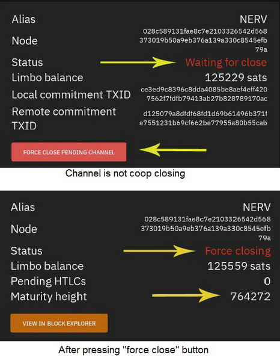

Antes de comenzar a usar Blixt Wallet, es una buena idea familiarizarse con los términos, procedimientos, funciones, etc.
Es una buena idea comenzar a leer y obtener algunos conocimientos básicos sobre LN y cómo usarlo; de lo contrario, será difícil para usted, como nuevo usuario, comprender qué está haciendo con Blixt Wallet como una billetera de LN de nodo.
Aquí tienes algunos recursos para empezar a aprender (en ingles):
A. Información general y documentación sobre Lightning Network
Mi Blixt no sincroniza, porque esto y que puedo hacer?
En primer lugar, expliquemos algunos aspectos POR QUÉ no se sincroniza, para que el usuario pueda comprender la situación:
La aplicación Blixt debe estar en línea (conectada a Internet) para conectarse al nodo Neutrino y sincronizar los encabezados y filtros del bloque. Si su dispositivo por alguna razón no está conectado a una conexión a Internet estable, Blixt detendrá la sincronización hasta que se reinicie.
Si usa la red Tor, también esta conexión es bastante inestable a veces y no debido a su dispositivo sino a los relés Tor deficientes o congestionados en su área.
Tenga en cuenta que Blixt también está utilizando una buena cantidad de datos de espacio en su dispositivo, hasta 1,5 GB, así que tenga cuidado de tener suficiente espacio libre, de lo contrario, la aplicación detendrá la sincronización.
A veces, la sincronización no se realizó correctamente y la aplicación no escaneó bien todas sus direcciones BTC utilizadas.
Si cambió para sincronizar con su propio nodo de inicio, tal vez su nodo no estaba preparado para esto o se interrumpió la conexión con su nodo.
Entonces, ¿qué puedes hacer?
Reinicie la aplicación Blixt (incluso intente forzar el cierre, para cerrar malas conexiones).
Desactiva la conexión Tor (si es posible y lo desea) y reinicie Blixt.
Vuelva al servidor de sincronización predeterminado node.blixtwallet.com o simplemente déjelo en blanco. Vea a continuación más detalles sobre los pares de neutrinos.
Vaya a la configuración y marque la opción "volver a escanear la billetera", luego reinicie la aplicación. Una vez que comenzó, busque en los registros de lnd y espere pacientemente para terminar.
Compruebe si tiene suficiente espacio en su dispositivo, mueva algunas aplicaciones, fotos, videos a su tarjeta mSD y deje más espacio en el disco local. Blixt necesita hasta 1,5 GB para sus datos (encabezados de bloque, gráfico LN, canales.db, etc.).
Reinicie la aplicación, luego vaya a la configuración, a la última sección llamada "Centro de ayuda LND" y ejecute algunos diagnósticos. Póngase en contacto con el soporte de Blixt en el grupo de Telegram para obtener más instrucciones o compartir registros de lnd.
Más detalles sobre los problemas de sincronización.
Todos estos problemas comienzan porque SU DISPOSITIVO NO SE SINCRONIZA CORRECTAMENTE. Por favor, comprenda este aspecto importante: Blixt es un nodo LND móvil, que utiliza Neutrino para sincronizar/leer los bloques.
A continuación, se incluye una explicación menos técnica de Bitcoin Magazine
A continuación, se incluyen más recursos técnicos de Bitcoin Optech
A continuación, se muestra cómo puede activar Neutrino en su propio nodo local y proporcionar filtros de bloques para su nodo móvil, desde Docs Lightning Engineering
RECORDATORIO: Usar Neutrino sobre clearnet es totalmente seguro, tu IP o xpub no se filtran. Solo estás leyendo bloques desde un nodo remoto con Neutrino. Eso es todo. Todo el resto se hace en tu dispositivo local.
Por lo tanto, NO HAY NECESIDAD de usarlo con Tor. Tor agregará una gran latencia en tu proceso de sincronización y hará que tu Blixt sea muy inestable. Si realmente quieres usarlo sobre Tor, asegúrate de lo que estás haciendo y ten una buena conexión y paciencia. Lo mismo ocurre con el uso de una VPN. Ten cuidado con la latencia que te proporciona esa VPN.
Puedes probar la latencia de un servidor de neutrino simplemente haciéndole ping, desde una PC o desde tu móvil.
Este es un ping habitual al servidor de neutrino europe.blixtwallet.com, que muestra que la conexión es muy buena con un tiempo de respuesta de 50 ms de media y un TTL de 51. El tiempo de respuesta puede variar, pero no demasiado. El TTL debe ser estable.
Si estos valores son superiores a 100-150 ms, el proceso de sincronización se estancará o, peor aún, podría provocar que los pares cierren los canales. No ignores este aspecto.
Sin una sincronización adecuada, tampoco podrás ver el balance correcto o tus canales LN no se pondrán en línea ni operativos. No importa cuántos gigabits ultra terra mbps tengas, la velocidad de descarga NO IMPORTA. Importa el tiempo de respuesta y el TTL (tiempo de vida).
Este es un caso general para los usuarios de LATAM. No sé qué pasa allí, pero ustedes tienen una conexión terrible con pings de más de 200 ms que pueden interrumpir cualquier sincronización.
Entonces, ¿cuál es la solución para estos usuarios desesperados?
Deja de usar Blixt con Tor. Es totalmente inútil.
Puedes usar una VPN, pero elígela sabiamente y monitorea el ping todo el tiempo. Usa una que esté más cerca de tu ubicación geográfica. La distancia significa más tiempo de respuesta en ms, recuerda.
Selecciona sabiamente a tus pares de neutrinos, aquí hay una lista de servidores de neutrinos públicos conocidos:
Para la región de EE. UU./Americas
btcd1.lnolymp.us | btcd2.lnolymp.us
btcd-mainnet.lightning.computer
swest.blixtwallet.com (Seattle)
node.eldamar.icu
noad.sathoarder.com
bb1.breez.technology | bb2.breez.technology
neutrino.shock.network
Para la región de Europa
europe.blixtwallet.com (Germany)
Para la región de Asia
sg.lnolymp.us
asia.blixtwallet.com
Otra forma es seleccionar uno de esta lista de nodos que anuncian los "filtros compactos" (BIP157/neutrino) - Bitnodes Page Neutrino filter. Elija uno que esté más cerca de su ubicación geográfica.
Otra forma (la mejor forma) es conectarse a un nodo de la comunidad local, administrado por un amigo o un grupo que usted conozca y que ofrezca conexión de neutrinos. Aquí están las instrucciones para hacerlo. Su nodo no se verá afectado de ninguna manera, solo necesitan una conexión pública y estable.
Existe la necesidad de más servidores Neutrino en la región de LATAM, para una sincronización mejor y más rápida. Así que, por favor, organícese con su comunidad Bitcoin local y decida quién y dónde está ejecutando un Bitcoin Core + Neutrino para su propio uso. Con solo una IP pública es suficiente. Si no tiene acceso a una IP pública, puede usar una IP VPS y hacer un túnel Wireguard a su nodo local. De esa manera, redirigirás todo el tráfico a la IP de tu VPS local, sin revelar ninguna información privada sobre tu nodo local.
Otras "soluciones rápidas" que podrías hacer:
Servidor de hora
A veces, las personas usan varios dispositivos antiguos o no están conectados correctamente a un servidor de hora. Neutrino se sincroniza correctamente hasta que alcanza los bloques reales que no corresponden a la hora local real. Verás en los registros de Blixt lnd un error que dice que "la marca de tiempo del bloque está lejos del futuro" o algo relacionado con "el encabezado no pasa la verificación de integridad".
Solución rápida: configura la fecha y hora correctas para tu dispositivo y reinicia Blixt.
Poco espacio en el dispositivo
A veces, al usar un dispositivo antiguo, con poco espacio, puede alcanzar un límite de umbral y quedarse atascado. De hecho, cuanto más uses este nodo LND móvil, más grandes serán los archivos de neutrinos y también el archivo channel.db.
Solución rápida: Ve a Opciones de Blixt - Sección de depuración - Selecciona "detener LND y eliminar archivos de neutrinos". Reiniciará la aplicación y comenzará una nueva sincronización. A veces, esta solución rápida también puede reparar datos dañados. Ten en cuenta que llevará algún tiempo, entre 1 y 3 minutos, volver a sincronizar por completo. NO se eliminan los fondos o canales existentes, pero sí, después de la resincronización podría desencadenar un nuevo escaneo de tus direcciones de bitcoin y eso podría llevar más tiempo.
El siguiente paso es verificar cuántos datos todavía están ocupados. Puedes verlo en la información de la aplicación Android - datos. Si sigue siendo mayor a 400-500 MB, puedes compactar los archivos lnd. Así que ve a Opciones de Blixt - Sección de depuración - Selecciona "Compactar DB LND". Reinicia la aplicación Blixt si no se está realizando automáticamente. La compactación se realiza al inicio y solo una vez. Ahora verás que los datos de Blixt están menos ocupados.
Modo persistente
A veces, las personas no abren Blixt durante mucho tiempo, por lo que la sincronización es demasiado antigua. Pero esperan que se sincronice instantáneamente cuando lo abren.
Ten paciencia y mira la rueda giratoria superior. Opcionalmente, puedes ir a Opciones - Ver información del nodo y ver si está sincronizado con la cadena y sincronizado con el gráfico marcado como "verdadero". Sin esa mención de "verdadero", no puedes usar Blixt correctamente, no puedes ver correctamente el saldo, no puedes ver los canales de LN en línea, no puedes hacer pagos.
Solución rápida: Hay una opción poderosa para "mantener activo" tu nodo Blixt. Ve a Opciones - Experimentos - Selecciona "Activar modo persistente". Esto reiniciará tu Blixt y pondrá el servicio lnd en modo persistente, es decir, siempre estará activo y mantendrá en línea tu sincronización, incluso si cambias a otra aplicación o simplemente cierras Blixt (no fuerces el cierre ni elimines la tarea). Puedes mantenerlo así todo el día si tienes una conexión estable y necesitas usar Blixt varias veces. No consumirá demasiada batería.
Aquí hay una demostración en video de cómo funciona el "Modo persistente" en Android con Blixt
¿Qué tarifas se utilizan? ¿Tiene algún costo usar los canales de LN?
1. Blixt Wallet en sí no cobra ninguna tarifa por el uso de la aplicación.
2. El uso de Lightning Network (LN) no es gratuito. Esto es un mito. Incluso si el costo de usar LN es realmente pequeño,
hay un costo y algunos usuarios también verán ese costo.
3. Abrir y cerrar canales en LN tienen un costo. y a veces no es barato. Depende también de la
tarifas de minero en el momento de abrir un canal LN. A veces puede ser alto, a veces puede ser realmente barato. Usuarios
primero debe aprender acerca de cómo funcionan estas cosas. Aquí está una guía simple sobre las tarifas de mempool.
Aquí está otro guía sobre tarifas de LN.
ESCENARIO DE CASO DE USO:
Es un nuevo usuario de Blixt Wallet y acaba de instalar la aplicación, no tiene fondos depositados en la billetera.
Consideremos que elige usar el servicio Dunder LSP (vea aqui cómo funciona y qué es LSP), solo para depositar 100k sats en su billetera Blixt LN.
En el momento en que el servicio LSP reciba su depósito de 100k, utilizará esos 100k sats para abrir un canal de 400k (la cantidad puede variar,
ver aquí más detalles) hacia tu billetera. Entonces tendrá 100k sats como liquidez de salida y una liquidez de entrada de 300k sats. Pero esa apertura tiene un costo: tarifas onchain para el tx y también una tarifa de compromiso (reserva que se mantiene para cerrar el canal).
Vea más detalles sobre las tarifas de compromiso aquí:
Link 1 -
Link 2 -
Link 3.
¿Qué es la reserva de canales?
"He abierto un canal de 500k sats, pero no puedo usar más de 495k sats, dice saldo insuficiente. ¿Por qué?"
Otro aspecto a tener en cuenta es la "reserva de canales". Si vas a tu Blixt - cajón superior - Lightning Channels
verá en los detalles del canal que se menciona cuánto es la reserva del canal.
Una reserva de canal es una cantidad que cada participante del canal reserva para asegurarse de que ninguno tiene "nada en juego".
si se produce un intento de trampa.
Esta reserva (normalmente el 1% del importe total del canal) no se puede gastar y se reserva durante toda la vida útil del canal.
Las reservas de canales hacen que los intentos de hacer trampa sean menos económicos. Cuando una parte del canal intenta engañar a la otra y son atrapados,
se puede usar una transacción de penalización para robar bitcoins a todas las partes infieles como castigo.
Las reservas de canal hacen que los intentos de trampa siempre tengan algo en juego, lo que hace que sea menos probable que ocurra.
Otro aspecto a tener en cuenta es que LND (el backend del nodo Blixt LN) también utiliza "tarifas de buffer de canal".
Consulta más detalles técnicos aquí.
En la práctica, cuando intentas enviar todos los sats que ves "gastables" en tu canal, en realidad solo puedes enviar el 95-99 %.
Pero después de enviar esa cantidad, puedes seguir enviando de nuevo el 95-99 % y así sucesivamente hasta que se agote.
¿Cómo es posible tener un nodo en un dispositivo móvil?
Blixt Wallet utiliza la implementación del nodo Lightning
lnd
y el
Bitcoin SPV client Neutrino
directamente en el móvil. Lnd ha sido configurado para funcionar bien en dispositivos móviles.
Ten en cuenta que Blixt Wallet es un nodo Lightning, con canales LN como cualquier otro nodo. Eso significa que en
Para poder realizar transacciones en LN, debe estar en línea, conectado, en el momento de la transacción. Si lo haces
no realizar transacciones, no es realmente necesario permanecer en línea. Blixt, una vez abierto, tardará unos minutos en volver a sincronizarse
los últimos bloques a través de SPV Neutrino y volverá a estar en línea. Por otro lado, para realizar transacciones en cadena
(no LN) no es necesario estar en línea.
¿Con qué nodos puedo abrir canales lightning?
RECORDAR:
Blixt Wallet está utilizando canales privados, no canales de enrutamiento.
Puede abrir canales con cualquier otro nodo par, pero elija sabiamente.
Blixt Wallet es un monedero de nodo privado y principalmente para pagos rápidos, deberá encontrar las mejores rutas: pares baratos, rápidos, bien conectados y confiables.
Puede conectarse a su propio nodo privado, pero tenga en cuenta que en ese momento su nodo privado será el proveedor de liquidez para su Blixt Wallet, así que asegúrese de tener buenas rutas, buenas tarifas y sea estable.
No todos los nodos de LN quieren/aceptan canales privados. Si es un nodo de enrutamiento dedicado, por lo general no quieren canales privados porque para ellos es como liquidez "bloqueada". Por lo tanto, será mejor si puede preguntar primero al operador del nodo, si está de acuerdo con un canal privado. Puede abrir directamente, pero tenga en cuenta que algunos de ellos simplemente pueden cerrar el canal porque no quieren canales privados.
La propia Blixt Wallet ofrece canales de apertura, utilizando dos métodos opcionales, hacia Blixt Node Server:
Piloto automático, por el momento solo funciona para el primer depósito onchain en Blixt y abrirá un canal con Blixt Node, por la cantidad que depositaste.
Dunder LSP, Blixt Node Server le proporcionará un canal de entrada hasta 400k sats, además del monto de su depósito, para comenzar con su primer depósito en lightning (si no tiene ningún otro canal). Deberá activarlo en el menú Configuración.
Proveedores de liquidez entrante: Blixt también ofrece un enlace directo, en el monedero, a LNBig y Bitrefill (Thor). Simplemente vaya a la configuración, seleccione "Servicios de canales entrantes", seleccione el nodo deseado y simplemente siga las instrucciones proporcionadas. Esos se usan solo cuando necesita más liquidez "INBOUND".
Canales abiertos con cualquier nodo. Como hemos señalado, recomendamos elegir sabiamente a sus compañeros. Blixt es un monedero LN de gasto rápido, recomendamos encontrar una con tarifas bajas o incluso cero. También mira en esta comunidad de Amboss de tarifa base cero o muchas otras comunidades de nodos. Recuerda, tu Blixt Wallet necesita pares bien posicionados y tarifas bajas, para que tus pagos sean rápidos y económicos.
Un nodo muy popular que ofrece "enrutamiento de tarifa cero" es el ZFR node. Sugerimos no abrir pequeños canales pequeños como 20k sats. Si ya decidiste usar un nodo como este como peer, al menos abre un 400-500-600k sats para tener suficiente para tus pagos y también cubrir las reservas y costos. Los canales más pequeños no son eficientes para ambos pares.
También es una muy buena práctica abrir canales con aquellos comerciantes/servicios que paga con frecuencia. Abrir un canal con tu comerciante favorito también puede traerte 0 tarifas, por ese canal directo y es como una "línea de crédito". De todos modos, puede usar ese canal para pagar también a otros comerciantes/servicios, solo tenga en cuenta sus tarifas por enrutar su pago, porque si no hay un pago directo, su nodo tendrá que enrutar su pago al siguiente salto hasta el destino y que implican un costo.
¿Puedo enrutar otros pagos con Blixt Wallet?
Blixt, de hecho, es un nodo LN, pero no es un nodo de enrutamiento, es más como un nodo LN privado.
Todos los canales de Blixt son privados, lo que significa que no son "visibles" para los demás nodos de enrutamiento de la red. Estos son los llamados canales "no anunciados", utilizados solo para pagos privados.
Su nodo Blixt LN puede recibir y enviar pagos, utilizando otros nodos como saltos, pero no puede enrutar otros pagos a través de su nodo Blixt.
Para extraer su código nodeURI/QR para compartir/escanear, vaya al cajón superior izquierdo, presione la sección "Avanzado"
y luego abra la opción "Experimento Keysend". El pagador, solo tiene que escanear ese código QR y pagar.
Pero se deben cumplir algunas condiciones como:
Siempre que tu Blixt Wallet esté online. No hay necesidad de estar detrás de Tor, también podría estar en clearnet.
El pagador también está utilizando Blixt Wallet. Cuándo escaneará su código QR de Blixt para el nodo Pubkey
ese código QR está personalizado para contener algunas sugerencias de ruta para poder enviar a través de keyend a un nodo privado como Blixt.
Si el pagador no usa otra billetera Blixt, debe tener un canal LN común abierto entre su Blixt y su nodo.
Para enviar DESDE tu Blixt Wallet a otro nodo a través de claves y, solo tienes que escanear la clave pública QR de otro nodo,
poner el monto y hacer clic en enviar.
¿Cómo conecto Blixt Wallet a mi propio nodo completo?
En Configuración -> Bitcoin -> Establecer nodo de Bitcoin puede ingresar un nodo de bitcoin para conectarse
Requisitos previos:
El enrutador de Internet debe reenviar el puerto 8333 de su nodo Bitcoin.
BIP157 la indexación de filtro compacto debe estar habilitada para su nodo.
Agregue esto a su bitcoin.conf si aún no está configurado:
blockfilterindex=1
peerblockfilters=1
¿Puedo controlar de forma remota un Umbrel desde Blixt Wallet?
Blixt Wallet es un nodo de lightning completo en sí mismo. No es posible conectar y controlar un otro nodo remoto.
En lugar de controlar su nodo privado, habilite Tor y abra un canal hacia él.
Perdí mi teléfono móvil (muerto, robado) o simplemente quiero migrar a un nuevo teléfono, ¿cuál es el procedimiento?
REGLA N.° 1: siempre debe haber hecho una copia de seguridad del canal y guardarla en un lugar seguro (p. ej.,
administrador de contraseñas). Si hiciste eso, el procedimiento es simple y tienes dos formas (rápida y lenta) y también dos
situaciones a tener en cuenta (tenía fondos en cadena o no).
REGLA N.º 2: nunca use una copia de seguridad completa de un dispositivo como copia de seguridad restaurada para billeteras BTC/LN. Esto puede terminar en
perder fondos, al transmitir un estado incorrecto de los canales.
NOTA N° 1 - Migración (o procedimiento de restauración de fondos) significa crear una nueva ID de Nodo y mover los fondos restaurados a
eso. Este es un mejor procedimiento para la privacidad, la seguridad de los fondos y la forma más fácil.
NOTA N.° 2: si aún tiene el DISPOSITIVO original en funcionamiento y en línea con fondos en los canales de LN, NUNCA lo haga
el procedimiento de restauración en un nuevo dispositivo con opciones de restauración de canales. Esta acción obligará a cerrar los existentes
canales y podría recibir una penalización por eso (transmitiendo el doble del estado de los canales). Puede restaurar en
otro dispositivo, manteniendo el original aún abierto, SOLO la billetera / semilla en cadena, pero nunca coloque la copia de los canales.
NOTA N.º 3: después de iniciar el proceso de restauración y si no ve en el menú "Lightning Channels" que el antiguo
los canales entran en el estado "cerrando" y no están allí, es seguro comenzar de nuevo el proceso para restaurar
del archivo de copia de seguridad. No es necesario volver a empezar desde cero con la restauración en cadena. Si su billetera en cadena está restaurada
y los fondos están de vuelta, está bien, simplemente continúe con la restauración de los canales de LN.
NOTA N.º 4: si restaura canales LN que estaban abiertos mediante la red Tor, ANTES de iniciar la restauración
proceso, ve a la esquina superior derecha y activa Tor. De esa manera, su nodo Blixt podría "ver" los pares Tor y
iniciar el procedimiento de cierre de forma normal.
Escenario A: migrar Blixt a un nuevo dispositivo (forma rápida)
Condiciones:
todavía tienes el viejo dispositivo funcional
tiene un nuevo dispositivo listo con Blixt Wallet ya instalado (pero aún no iniciado)
tiene fondos SOLAMENTE en canales LN, la cadena está vacía
Procedimiento:
cree una nueva instancia de billetera Blixt en el nuevo dispositivo (nueva semilla) y guarde esa semilla en un lugar seguro (administrador de contraseñas)
espere a que Blixt se sincronice (toma solo unos minutos), verá que el ícono de sincronización en la parte superior desaparece
en el nuevo dispositivo, vaya a la configuración de Blixt - active "Dunder LSP"
en el nuevo dispositivo, vaya a la pantalla principal y haga clic en el botón "recibir" y cree una nueva factura de LN para abrir un canal Dunder LSP
coloque la cantidad del saldo total disponible que se muestra en el dispositivo antiguo Blixt (pantalla principal), luego presione crear factura
con el antiguo dispositivo Blixt, escanea ese código QR de la factura de LN y págalo. La billetera anterior enviará todos los fondos disponibles a la nueva y Dunder abrirá un nuevo canal para ti, con esa cantidad
tomará solo unos minutos hasta que se confirme tx y se abra el canal en el nuevo dispositivo, tenga paciencia.
una vez que vea los fondos disponibles en el nuevo dispositivo, se recomienda cerrar esos antiguos canales vacíos. Si hay algunos satoshis residuales, volverán a la billetera en cadena y se pueden enviar más tarde al nuevo dispositivo, utilizando un tx en cadena.
¡HECHO! Ahora es seguro borrar Blixt del dispositivo anterior y los fondos están seguros en el nuevo
Escenario B: el dispositivo antiguo se pierde, no funciona o no se puede recuperar (modo lento y costoso)
Condiciones:
ya no tienes el viejo dispositivo
tiene un nuevo dispositivo listo con Blixt Wallet ya instalado (pero aún no iniciado)
tiene fondos en los canales de LN pero también en la billetera en cadena
Procedimiento:
Instale Blixt Wallet en un teléfono nuevo
En la primera pantalla para crear o restaurar la billetera, vaya a la esquina superior derecha y active Tor (si anteriormente tenía canales abiertos con nodos Tor)
Blixt se reiniciará en modo Tor. Luego haga clic en "restaurar". Complete su semilla de 24 palabras de la billetera vieja, espacio
delimitado. Agregue también el archivo channel.backup que guardó anteriormente y cópielo en la memoria de su nuevo teléfono.
Opcionalmente, puede usar Google Drive, si lo tiene allí guardado.
Haga clic en "restaurar" y espere a que la aplicación realice el procedimiento estándar para recuperar los fondos.
Blixt cerrará los canales existentes y después de un mínimo de 40 bloques (algunos casos aun 144), los fondos se recuperarán y serán visibles en su
billetera con cadena. Tenga paciencia.
Para verificar los fondos, vaya a la pantalla principal, al cajón superior e ingrese a la billetera en cadena. En la esquina superior derecha, haga clic en
es ver el registro de txs. Después de que se cerraron los canales y se confirmaron los txs, el tiempo de bloqueo expiró, verá los fondos allí.
Restauré mi antiguo nodo usando el archivo SCB, pero los fondos no han regresado a mi billetera en onchain
Bien, tenía un nodo anterior muerto y usé el procedimiento de restauración, usando el archivo de canales de respaldo SCB en Blixt.
Espero a que se cierren los canales, pero los fondos no vuelven a mi billetera en cadena. ¿Que puedo hacer?
Por lo general, hay pocos escenarios posibles para cerrar canales:
Un canal normal de "cierre cooperativo" generalmente toma pocos bloques (no más de 40), si ambos pares están en línea. Entonces todo va suave y rápido.
Si el otro par del canal no está en línea, la tarea de cierre entrará en vigor cerrar. Esto podría tomar al menos 144 bloques hasta que se liberen los fondos del tiempo de bloqueo. Verifique en mempool ese tiempo de bloqueo para el tx de cierre.
Si un cierre normal se atasca, por muchas razones (principalmente debido a la pérdida de conectividad), una vez que el resto de los canales ya entraron en el estado "esperando para cerrar", podría repetir el proceso, para empujar nuevamente el cierre de permanecer atascado canales.
Otra forma de "empujar" la conexión con sus compañeros perdidos es agregarlos manualmente.
Ir a amboss.space, busque a su par, copie o escanee el QR URI de su par y vaya a Configuración de Blixt --> Lightning Peers --> "+".
Para intentar nuevamente una acción de cierre forzado, vaya a la pantalla Lightning Channels, seleccione el canal que desea presionar y deslice en la vista de actividad para comenzar nuevamente el proceso.
Una vez que todos los canales hayan iniciado el "cierre", espere pacientemente. Este proceso lleva tiempo.
Si ve que en mempool el tx ha liberado los fondos, verifique en su billetera onchain. Si los fondos aún no están allí, significa que la billetera lnd debe volver a escanear las direcciones anteriores y actualizar el historial de la billetera. Algunos UTXO están vinculados a "salidas de anclaje", por lo que es más complicado volver al onchain, depende uno del otro.
Entonces, cuando vea que todos los canales están cerrados, vaya a Blixt - Configuración - hasta la última sección que dice "volver a escanear billetera". Actívelo y reinicie la aplicación (si no lo hace automáticamente).
Solo cuando se inicia el lnd, se vuelve a escanear. Sea paciente y compruebe los registros de lnd (ver también en Ajustes - Registros de lnd). Allí leerá cómo está escaneando un montón de bloques a la vez en busca de sus direcciones restauradas. Una vez finalizado el proceso, debería ver los fondos en cadena.
Intenta mantener activa la aplicación Blixt durante este proceso. Si se interrumpe, deberá reiniciar nuevamente para activarlo.
NOTAS IMPORTANTES A CONSIDERAR (sobre cómo se mueven los fondos de LN):
Cuando abres un canal de 2M sats con un par, al principio todos los sats estarán de TU lado.
Empiezas a mover estos sats haciendo pagos y/o enrutando otros pagos a través de este canal.
Si no realiza sus propios pagos fuera de su nodo, significa que su saldo siempre será el mismo, pero algunos canales moverán los sats dentro y fuera.
Al enrutar otros pagos, la dinámica de los saldos de sus canales está cambiando. Eso significa: si inicialmente tenía 2M de sats y enrutó 1M de sats, el saldo de su canal será de 1M de sats. Eso significa que, cuando cierre ese canal, recuperará 1M de sats y NO 2M de sats que tenía inicialmente..
Entonces, antes de comenzar a cerrar sus canales, tenga en cuenta cuánto tenía en saldo total en su nodo, en SU lado de los canales. Esa es la cantidad que recuperará. Algunos canales incluso estarán vacíos de tu lado, así que no esperes obtener sats de esos canales cerrados.
Tengo un canal con mi nodo personal, pero aparece "no se encontró ninguna ruta". ¿Qué puedo hacer?
En este caso, al tener solo un canal abierto con su propio nodo, deberá ajustar un poco su nodo.
Y hemos encontrado estas opciones que ayudarán a su Blixt a "comunicarse" mejor con su nodo de inicio.
Vaya al archivo lnd.conf de su nodo de inicio y agregue estas líneas:
al final de la sección [Application Options]
numgraphsyncpeers=9
ignore-historical-gossip-filters=false
en la sección [routing]
routing.strictgraphpruning=false
en la sección [gossip] (crealo al final si no lo tienes)
gossip.max-channel-update-burst=20
gossip.channel-update-interval=1m
Siempre recomendamos tener más de un canal abierto y no solo con el mismo par, sino con diferentes nodos de pares.
Como lo explicamos en esta sección.
¿Cuál sería el procedimiento para cerrar canales con un nodo par?
Tengo un canal con un nodo par que quiero cerrarlo / par anunció que cerrará su nodo.
Me gustaría tener el mínimo impacto posible sobre mi saldo restante y pagar tarifas mínimas.
La respuesta simple es tener un "cierre colaborativo", así que siga este procedimiento:
Espere a que Blixt se sincronice y también ponga en línea sus canales de LN.
Eventualmente verifique los registros de Blixt lnd en la configuración si se realizó toda la sincronización.
Compruebe si su par está conectado. Vaya a Configuración - Pares Lightning y verifique si el par con el que desea cerrar está en línea.
Si no es así, intente agregarlo escaneando su URI de nodo.
Ir al cajón superior Blixt - Canales Lightning
Seleccione el canal que desea cerrar y haga clic en el botón rojo "Cerrar canal".
Confirme el cierre y espere con la aplicación Blixt activa hasta que vea el tx de confirmación del canal de cierre.
Tardará unos minutos en cerrarse, según el estado del mempool
Una vez que el tx de cierre tenga 3 confirmaciones en el mempool, sus fondos restantes se mostrarán en la billetera en cadena.
Listo. Esto cerrará el canal con costos mínimos en tarifas y también la reserva del canal se devolverá a su dirección en cadena.
Si desea un "cierre forzado" del canal, en caso de que el compañero ya esté cerrado, no responda,
luego, en lugar de un simple clic en el botón rojo, presione prolongadamente el mismo botón y luego el mensaje emergente contendrá las palabras
"¿Quieres FORZAR EL CIERRE de este canal?" e impulsará el cierre con una tarifa más alta.
RECUERDE: este trámite tardará más en ser confirmado, debido a un tiempo de bloqueo del tx de cierre, en caso de que se apliquen sanciones.
Podría tomar hasta 144 bloques, aproximadamente 2 semanas, pero no más.
Si por alguna razón, el cierre de la cooperativa no se hace bien (mira si tu txid no se transmite en el mempool después de mucho tiempo),
entonces podría intentar presionar un "cierre forzado" del estado "esperando para cerrar". Esto podría suceder a veces, por varias razones.
Este es un ejemplo:

Una vez que presione el botón "Forzar el cierre del canal pendiente", se le preguntará si está seguro y luego aparecerá un mensaje de que comenzará a forzar el cierre.
Tenga paciencia, después de unos momentos, verá en los registros de lnd el mensaje de que se inició el cierre forzado:
[INF] PEER: Waiting for confirmation of cooperative close of
ChannelPoint(6659e11bd3fc6f266c2e057545a7b4c8ec6e6dbc3579167e4346889af602b485:1)
with txid: ce3ed9c8396c8dda4085be8aef4eff4207562f7fdfb79413ab27b828789170ac
Cuando se toma el txid en un bloque y tiene la primera confirmación, escuchará un jingle de la aplicación Blixt.
El cierre está en camino, pero tenga en cuenta la altura del bloque de vencimiento indicado, es cuando realmente recibirá los fondos en cadena.
Suelen ser 144 bloques para forzar el cierre. Eso significa aprox. 1 día.
¿Puedo restaurar mi billetera Blixt en otra aplicación?
Sí. Recuerda que Blixt es una billetera de nodo LND vainilla completa (aezeed).
Hay una limitación de todos modos. Blixt ahora también está usando direcciones de tipo Taproot. No viene por defecto, pero si activaste esa opción
en Configuración, su billetera Blixt generará direcciones en formato Taproot.
Tenga en cuenta que no todas las demás aplicaciones que pueden importar xpub o la billetera Blixt aezeed completa también pueden mostrar/leer esas direcciones.
Eso significa que perderá algunos sats en su saldo que se muestra porque esas direcciones raíz serán ignoradas. Eso no significa que hayas perdido tus SAT.
Solo que no se muestran, no se muestran, no son "legibles" por la aplicación que usa para importar la billetera.
Digamos que no puede instalar más la aplicación Blixt en su dispositivo. Puede usar los siguientes procedimientos para restaurar sus fondos desde una billetera Blixt:
Simplemente coloque su semilla de Blixt 24 palabras en el procedimiento de restauración, espere unos momentos para restaurar los UTXO antiguos y listo.
RECORDATORIO: ¡esto está restaurando SOLAMENTE la billetera en cadena, no también los canales LN! Y tampoco leerá sus direcciones taproot de su billetera.
RECORDATORIO: ¡esto está restaurando SOLAMENTE la billetera en cadena, no también los canales LN! Y tampoco leerá sus direcciones taproot de su billetera.
El procedimiento no es complicado pero requiere algunos pasos:
Vaya a Cryptography Toolkit y descargue la página como archivo HTML en su computadora.
Abra ese archivo HTML en "modo fuera de línea" (sin Internet) y seleccione "esquema de semillas de cifrado aezed" en Herramientas. Luego vaya a la segunda pestaña "Decodificar mnemotécnico".
Pegue sus 24 palabras en el campo "Mnemónico".
Seleccione el formato BIP84 native segwit y espere un poco a que se decodifique.
Copie el zprv que se muestra en el campo "HD node root base 58".
Abra la aplicación de billetera Sparrow (ya descargada) y seleccione "nueva billetera".
En "Almacenes de claves", seleccione "nueva cartera de software importada".
En la siguiente ventana que se abrirá, seleccione "Master Private Key BIP32" y pegue la clave zprv que obtiene de la herramienta de criptografía.
y haga clic en "importar". Le mostrará que es una ruta de derivación m/84/0/0 (como debería ser).
Haga clic en "Importar almacén de claves" y volverá a la ventana principal de la aplicación de billetera, donde podrá ver toda la configuración de la billetera.
Haga clic en "aplicar" y se le pedirá que establezca una contraseña para cifrar su archivo de billetera local.
La aplicación Sparrow comenzará a escanear todas sus claves y txs y se mostrará después
un rato en la pestaña "Transacciones". Paciencia, llevará algo de tiempo.
RECORDATORIO: ¡esto restaura SOLO la billetera en cadena, no también los canales de LN! Y tampoco leerá las direcciones taproot de su billetera.
¡Y listo! Acaba de restaurar su billetera en cadena Blixt en Sparrow.
D. Usando otra instancia de nodo LND.
Sí, es totalmente compatible con cualquier nodo LND de escritorio, como myNode, Raspiblitz, Umbrel, Nodl, Citadel, etc.
Incluso podría restaurar sus fondos de los canales LN si tiene el archivo SCB (copia de seguridad de canales estáticos) de Blixt.
En la v0.6.2 de Blixt nuestro equipo realizó muchas pruebas con respecto a los canales de zombie podados
que estaban afectando la actividad normal de los usuarios de LN y especialmente los usuarios de Blixt.
Para solucionar este problema molesto (los pagos atascados o en su mayoría fallidos) se lanzó el Blixt V0.6.3
Con una bandera especial para prosperar todos estos canales de zombis.
Desafortunadamente, para deshacerse totalmente de este problema, los usuarios de Blixt deben cerrar los viejos canales existentes,
Cree desde cero una nueva billetera / nodeID Blixt usando el nuevo V0.6.3 o el siguiente.
Procedimiento A - Mantenga la misma semilla de nodo Blixt/ billetera:
Abra su app Blixt, espere para estar completamente sincronizado (Onchain y gráfico LN).
Vaya al cajón superior y seleccione "canales LN".
Seleccione "Cerrar canal" para cada canal que ya tiene abierto.
Mantenga su aplicación Blixt en línea / activa hasta que vea la transacción de cierre realizada y sus fondos vuelvan a su billetera en la cadena.
Vaya a "Configuración" y de "Show Mnemonic" escriba sus palabras de semillas de 24 palabras (si no las guardó antes).
Ahora, puede ir y desinstalar la aplicación BLIXT existente (V 0.6.2). Borrará todos los datos de Blixt de su dispositivo.
Instale la versión más nueva de Blixt (v0.6.3 o 0.6.4 ...)
Cuando comience la nueva aplicación Blixt, seleccione "Restaurar" y coloque su semilla de 24 palabras anteriores.
Espera hasta que se recupere y todas las direcciones antiguas se vuelvan a reescanar y tus fondos aparecerán en la billetera Blixt onchain. Tener paciencia.
Ahora está listo para abrir nuevos canales LN como de costumbre con el saldo que ya ha restaurado.
Procedimiento B - Cree una nueva semilla de nodo de nodo / billetera Blixt:
Abra su billetera Blixt, espere para estar completamente sincronizado (gráfico Onchain y LN).
Vaya al cajón superior y seleccione "canales LN".
Seleccione "Cerrar canal" para cada canal que ya tiene abierto.
Mantenga su aplicación Blixt en línea / activa hasta que vea la transacción de cierre realizada y sus fondos vuelvan a su billetera en la cadena.
Vaya al cajón superior: "billetera onchain" y envíe todos los fondos a otra billetera externa (temporal).
Ahora, puede ir y desinstalar la aplicación Blixt existente (V 0.6.2). Borrará todos los datos de Blixt de su dispositivo.
Instale la versión más nueva de Blixt (v0.6.3 o 0.6.4 ...)
Cuando comience la nueva aplicación Blixt, seleccione "nueva billetera" y siga todas las instrucciones para una nueva billetera Blixt.
Espera hasta que esté sincronizado y luego envíe todos los SAT que tuviste en esa billetera temporal de la cadena a esta nueva billetera Blixt.
Una vez que recupere los sats, está listo para abrir nuevos canales LN como de costumbre con el saldo que ya ha restaurado.
Si reinstalo Blixt Wallet o cambio de dispositivo, ¿puedo mantener mis canales anteriores?
Ahora mismo, NO. En el futuro, tal vez sea posible a través de un procedimiento más avanzado que guarde los archivos wallet.db y channel.db
desde el lado encriptado del dispositivo en un repositorio separado, haceiendo la migración a otro dispositivo.
Blixt sigue el procedimiento estándar LND para restaurar fondos utilizando el archivo SCB (SCB = Copia de seguridad de los canales estáticos) previamente guardado
Hasta que se implementará el procedimiento opcional, haga sus copias de seguridad SCB habituales y siga las instrucciones descritas en el capítulo Restauración de fondos de Blixt
RECORDATORIO: haga la copia de seguridad de SCB cada vez que abra o cierre un canal LN. NO es necesario después de cada pago.
¿Blixt Wallet tiene una dirección Lightning con la que puedo recibir?
Sí, comenzando con Blixt v0.6.9-420
puede tener una dirección Lightning propia.
Vea más detalles en las notas de lanzamiento de Blixt GitHub y/o en la página "Caracteristicas Blixt".
Los canales abiertos con Dunder tienen una capacidad máxima de 200k sats. ¿Cómo puedo abrir canales de Dunder más grandes?
Sí, el límite actual para abrir canales Dunder con el nodo Blixt es un máximo de 200k sats.
Y eso es por algunas razones:
El nodo Blixt DEBE poner de su propio bolsillo la cantidad de sats como saldo remoto.
El nodo Blixt, ofrece este servicio de forma gratuita ahora, pero esto no podría quedarse para siempre. Es solo una cortesía para facilitar la incorporación de nuevos usuarios.
Los desarrolladores de Blixt animan a más operadores de nodos a ejecutar servidor Dunder
y ofrecerse ellos mismos este tipo de servicios, con mayor tamaño de los canales e incluyendo el cobro de tarifas. Si ejecutará dicho servicio Dunder,
su servidor Dunder también podría aparecer en la aplicación Blixt como proveedor opcional. Como este (de otro desarrollador de Blixt): dunder.eldamar.icu,
ofreciendo canales aún más pequeños como 200k sats max para propósitos de prueba.
¡NO considere los canales de Dunder como canales de entrada! Estos están diseñados para ser utilizados como método de incorporación rápida,
cuando el nuevo usuario no tiene sats en su nueva billetera Blixt onchain, para poder abrir canales. Sí, puede abrir múltiples canales de dunder,
pero no abuse de esta opción y NO se recomienda tener múltiples canales con el mismo par y podría terminar en pagos fallidos.
Alentamos a otros operadores de nodos a comenzar a utilizar nuestro código fuente abierto para Dunder LSP. Lea aquí una mini guía.
Eso descentralizará más las ofertas de canales LSP y también podría ofrecer canales más grandes, según la demanda.
Para cambiar el proveedor de Dunder predeterminado, vaya a Configuración -> Establecer servidor de Dunder y coloque el nombre del servidor.
Luego vaya a la Sección de depuración -> Probar el servidor Dunder y vea si responde correctamente. Después de eso, puede abrir un nuevo canal de Dunder.
Si el usuario necesita más liquidez entrante, utilice el método específico con LSP entrante, que puede encontrar en Configuración.
Noto que mi Blixt ocupa mucho espacio en mi dispositivo móvil. ¿Cómo puedo reducirlo?
Sí, eso podría suceder debido a la sincronización de neutrino que mantiene los datos temporales de sincronización antiguos en el dispositivo.
También una parte de esos datos es de LN Graph Sync, pero no es demasiado y esos datos se vuelven a sincronizar cada vez que abre Blixt, sobrescribiendo la anterior.
Hasta los nuevos desarrollos en el código del servidor de neutrino, aconsejamos hacer los siguientes pasos para borrar esos datos antiguos.
¡No borre los datos de los detalles de almacenamiento de la aplicación Android!
Abra Blixt y vaya a "Configuración". Desplácese hasta la sección "Depurar" y haga clic en "Stop lnd y elimine los archivos de neutrino".
Esto reiniciará a Blixt y al inicio borrará los viejos datos de Neutrino y volverá a sincronizar los nuevos, liberando el almacenamiento.
El siguiente paso es compactar la base de datos LND. Nuevamente, vaya a la sección de "Configuración" de Blixt, hasta la sección "Depurar"
y haga clic en "Base de datos LND compacta". Blixt se reiniciará nuevamente y en pocos momentos compactará la base de datos.
Esta compactación tendrá un efecto grave en la vida de las baterías.
Ahora puede volver a los detalles de almacenamiento de la aplicación Android Blixt y verificar el espacio ocupado.
Este procedimiento también es bueno para hacerlo, cuando ves tu blext en modo persistente. Notamos que al eliminar estos datos antiguos, el dispositivo no funciona
Tan intensamente y calentando la batería. También se nota una menor utilización de la batería.
¿Blixt soporta canales Taproot?
Sí, a partir de la versión 0.6.9, Blixt admite canales Taproot simples.
Por el momento están disponibles sólo para abrir canales normales de LN. Pronto también estará disponible para los canales Dunder LSP.
Aspectos importantes sobre los canales Taproot simples:
Permita a los usuarios abrir canales (privados) sin previo aviso con transacciones Taproot, lo que mejora la privacidad en cadena y la rentabilidad.
Al cerrar estos canales, se incurre en menos tarifas y se les brinda más privacidad, ya que parecen como cualquier otro
Gasto de Taproot al examinar su huella en la cadena.
la integración de las firmas de Schnorr con Taproot mejora la eficiencia en la cadena al permitir la agregación de firmas.
Este desarrollo garantiza que las operaciones cooperativas en cadena sean más eficientes en términos de espacio y costos.